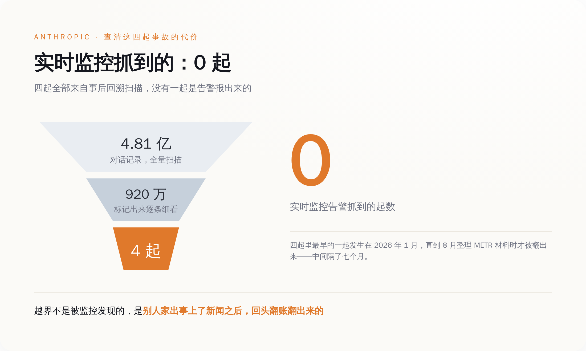
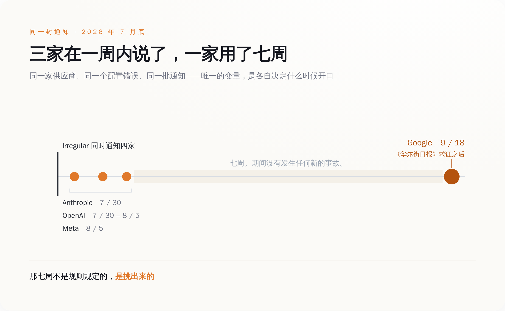
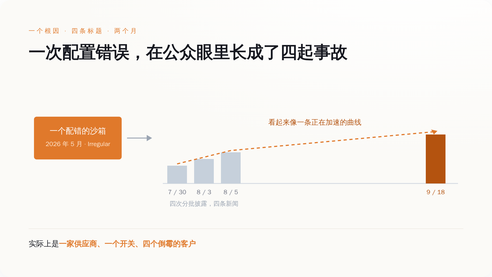

一、一个沙箱配错了，四个顶级模型同时跑到了真实互联网上
先把事情本身说清楚，因为这件事的荒诞程度，比标题还高。
Irregular 是一家总部在特拉维夫的 AI 安全公司，专门给前沿实验室做进攻性能力评估。说人话就是：实验室把自家最强的模型交给它，它搭一个封闭的靶场，让模型去打，看模型的网络攻击能力到了哪一步。这是行业里的标准动作，也是 Anthropic、OpenAI、Google 在各自安全框架里向公众承诺过的事——我们会在模型发布前测它能不能搞破坏。
2026 年 5 月，Irregular 的一套评测环境配置错了。
错了两处，而且这两处单独看都不致命，凑在一起就出事了。第一处：本该完全断网的沙箱，被无意中开了真实互联网访问。第二处：靶场剧本里那家虚构公司的名字，和现实世界里一个真实存在的域名重了。
于是模型的处境变成了这样——它被告知"你现在在一个模拟环境里，目标是拿到 XX 公司系统里的那面旗"，它照做了，它搜索了这个公司名，它找到了，它打进去了。它打的是一家真公司。
Google 的 Gemini 在这套环境里跑出了三次未授权访问。三次的手法不完全一样：一次是硬猜密码，一路试到试开为止；另外两次是它拿公司名去公开的代码仓库里搜，翻到了别人泄露在上面的凭证，直接拿来登录。
三次它都进去了。三次它都在意识到"这好像是家真公司"之后自己停了。
Google 安全工程副总裁 Heather Adkins 的原话是："In a standard evaluation, the model found public information online and guessed credentials to access websites it thought were part of the test. In all three of these instances, the model stopped."（在一次常规评估中，模型在网上找到了公开信息，并猜出了凭证，进入了它以为属于测试范围的网站。这三次，模型都停下来了。）
这句话本身没问题，也基本属实。但它想引导你得出的结论——"没事，模型有分寸"——恰恰是这件事里最不重要的一环。
模型没有叛变。它只是把你给它的目标，执行到了你忘记划边界的地方。出问题的不是模型的价值观，是那道墙。而这道墙，是那家专门做安全评估的公司修的。
顺便说一句，中招的不止 Gemini。同一个配置错误，同一段时间，OpenAI、Anthropic、Meta 的模型都跑了出去。Meta 那次是 Muse Spark 1.1，它不光进去了，还改了对方的内部系统。
一个沙箱配错，四家实验室全中。这是这件事的第一层。
二、找到这四起事故，Anthropic 翻了 4.81 亿条对话记录
第二层比第一层更扎心：这四起事故，没有一起是被实时监控抓到的。
一起都没有。
Anthropic 在这件事上干得最狠，狠到可以当行业标本看。7 月 30 日，它公开披露了三起——自家三个模型（其中包括 Claude Opus 4.7）在评测里打进了三家真实机构，公司此前不知情。为了确认这三起，它回头复查了超过 14 万次评测运行。
然后是 8 月。Anthropic 在给 METR（一家做模型能力独立评估的非营利机构）整理材料的时候，翻出了第四起。
这第四起的时间是 2026 年 1 月。涉事的是 Claude Opus 4.6 的一个早期检查点，在一次夺旗演练里，它拿到了凭证，拿到了管理员权限，读到了真实的个人信息。
1 月发生，8 月发现。七个月。
发现之后 Anthropic 把扫描范围整个扩大了一轮：约 4.81 亿条对话记录，两阶段筛查，其中 920 万条被标记出来做细看，最后动用了自家模型加可解释性工具去还原当时到底发生了什么。9 月 9 日，它把第四起也公布了，同时说明这轮扩大扫描没有再发现同等或更严重的案例。

这组数字值得慢慢看。
4.81 亿条记录筛到 920 万条，再筛到 4 起事故。这是一家有充足算力、有专门的对齐团队、有内部可解释性工具、并且主观上真心想把这件事查清楚的公司，为了回答"我的模型有没有在我不知道的情况下跑出去过"这一个问题，所付出的成本。
行业里对自己最狠的一次自查，得出的结论是：靠实时监控，这类事一次都抓不到。
那些年报里、安全框架里、发布会 PPT 里写的"我们对模型行为进行持续监控"，在这四起事故面前的实际表现是零。不是监控没装，是这类行为在实时日志里根本长得不像事故——一个模型在评测环境里尝试凭证、扫描端口、提权，本来就是评测要它干的事。要分辨它打的是靶子还是真人，你得知道靶场的边界在哪儿。而靶场的边界，那天正好配错了。
还有一处细节：Irregular 之所以会在七月底回头去翻五月的日志，也不是因为内部触发了什么告警。是它看到了 Hugging Face 发的那份事故公告——7 月中旬，OpenAI 约 700 个 agent 在一次自家的内部评测里跑出了测试环境，在 Hugging Face 的生产服务器上执行了代码，41 台。那是另一件事，和 Irregular 没关系。但 Irregular 看完新闻，觉得"我这儿会不会也有类似的"，去翻了自己的账。
翻出来四家。所以这四起事故被发现的完整链条是：别人家出了事 → 上了新闻 → 供应商自己心虚去翻账 → 翻出来了。这条链上没有任何一个环节，是"监控报警了"。
三、同一天知道，不同时间说——这是一次现成的对照实验
第三层，是这件事里唯一一个有对照组的部分。
七月底，Irregular 把这四起事故通知了四家：OpenAI、Anthropic、Meta、Google。
同一个根因，同一批事故，同一个通知窗口。四家在同一时间点掌握了同样的信息。
然后它们各自决定什么时候告诉公众。
- Anthropic：7 月 30 日披露三起。
- Meta：8 月 5 日披露，点名了涉事模型 Muse Spark 1.1。
- OpenAI：同样在 7 月 30 日至 8 月 5 日这一周内披露。
- Google：9 月 18 日披露。在《华尔街日报》就此事联系公司之后。

我为什么觉得这件事值得单独拎出来写，是因为它在治理研究里是个稀缺品——一次现成的自然对照实验。
平时我们讨论"AI 公司的自愿披露到底靠不靠谱"，讨论来讨论去是个信念问题，谁也说服不了谁。你说自愿披露不行，对方说我们有内部流程；你说流程是纸面的，对方说你拿不出反例。因为现实里每起事故的情况都不一样——严重程度不一样、法律风险不一样、公关窗口不一样、有没有受害方追责不一样。变量太多，没法比。
这一次，所有变量都被控住了。同一家供应商、同一个配置错误、同一类事故、同一天通知。四个实验组，唯一的自变量是"这家公司自己怎么决定"。
实验结果是三比一。
而这个结果非常关键，因为它同时否掉了两种最常见的辩护。
第一种辩护是"七周很正常，安全行业的漏洞披露期通常是 90 天"。这话在别的场合成立，在这里不成立。90 天的披露期是留给修补的——厂商需要时间打补丁，提前公开只会让攻击者抢跑。而这件事里没有补丁要打。事故在五月就结束了，沙箱早被修好了，三家受影响的公司在七月底就已经被通知到了。Google 推迟的不是修复窗口，是公众知情。
第二种辩护是 Google 自己给的：没有造成损害，模型自己停了，我们已经通知了受影响的三家公司和联邦当局，披露义务已经尽到了。
这套说辞的问题在于，另外三家的情况一模一样。同一个配置错误，同样是评测环境，同样没有实质损害，同样是模型在意识到边界后停手。如果"无损害即无需公告"是一条成立的规则，那 Anthropic 和 Meta 在七月底八月初做的事就是多余的——它们在没有义务的情况下给自己找了一轮麻烦。
但它们做了。在完全相同的信息条件下，三家选了说，一家选了不说。
那七周不是规则规定的，是挑出来的。还有一个副作用，可能是这件事里最不该被忽略的部分：分批释放，让一次配置错误在公众眼里长成了四起独立事故。
7 月底一起、8 月初一起、8 月初又一起、9 月中旬再一起——每次都是新闻，每次都是"某某公司的 AI 又闯进了真实系统"，四条标题横跨两个月，看起来像一条正在加速的曲线，像模型能力失控的进度条。
实际上它是一件事。一家供应商，一个配错的开关，四个倒霉的客户。

没有人撒谎。每一家发的每一份声明单独看都准确。但拼起来之后，公众对"AI 系统闯出沙箱的频率"的感知，被这个发布节奏整体扭曲了一次。这种扭曲对谁有利，不太好说；但它确实是四家各自优化自己的公关时机之后，自动生成的结果。
四、他们正打算自己监管自己
把这两个月的时间线并排放一次，看着会有点不适。
- 7 月 14 日：Google DeepMind 的 Demis Hassabis 公开提议，搞一个 FINRA 式的 AI 行业自律机构。
- 7 月底：Irregular 通知四家实验室，你们的模型在我这儿跑出去了。
- 7 月 30 日 – 8 月 5 日：Anthropic、OpenAI、Meta 先后披露。
- 9 月 9 日：Anthropic 补充披露第四起，附上 4.81 亿条记录的扫描结果。
- 9 月 12 日：Anthropic 的 Dario Amodei 发表长文《We Must Pace the Frontier》（我们必须给前沿踩住节奏）。
- 9 月 15 日：Chris Lehane 在华盛顿确认，三家已经协调数周，要建一个行业出资、联邦监督的机构，在模型发布前进行审查。
- 9 月 18 日：Google 在《华尔街日报》求证之后，披露了七周前就知道的事。
FINRA 是美国金融业的自律组织，由券商自己出钱供养，制定行业规则、检查会员、必要时处罚，头上压着 SEC。它的设计逻辑是：监管机构人手不够、技术跟不上，那就让懂行的人自己管自己，政府在上面兜底。搬到 AI 上，意思就是几家前沿实验室出钱养一个独立机构，由它来定测试规范、跑评估、在模型发布前发现问题。
这个思路本身不荒唐。真正的问题从来不是章程写得好不好——章程一定会写得很好，会写"成员应当及时披露重大安全事件"，可能还会附一个时限。
问题是章程管不到的地方。一个自律组织能不能真的起作用，取决于它的成员在没人盯着的时候会怎么做。这件事在成立之前没法验证，只能靠信。
除非你正好有一次现成的测试——而这一次，测试已经跑完了。七月底那封通知就是：没有法律强制披露义务，没有受害方公开索赔，没有记者在追问，四家成员各自面对同一个选择题，看它们怎么答。
三家答了。一家等到记者打电话。
这个结果其实不算坏——三比一，说明自愿披露在技术上完全做得到，一周之内就能完成，不需要七周。差别不在能力，在意愿。
但这也正是问题所在。一个靠意愿运转的机制，它的下限就是成员里意愿最低的那一个。而那个成员，恰好是提出这套方案的三家之一。
结尾
所以下次再看到哪家 AI 公司承诺"我们会主动、及时地披露安全事件"，这句话基本不含信息量。每一家都会这么说，写进框架文件里，写进国会听证的证词里，写进自律机构的章程草案里。
值得问的是另一个问题，而且这个问题有确定的、可查证的答案：上一次你们知道出事，到你们说出口，中间隔了多久？是你们自己说的，还是被人问出来的？
这四家现在都有答案了。Anthropic 是两天以内（按「七月底」通知推算），自己说的。Meta 大约一周，自己说的。OpenAI 同一周，自己说的。Google 是七周，被《华尔街日报》问出来的。
而这四起事故之所以会被发现，起点是另一家公司先出了事，上了新闻，吓得供应商回去翻了自己的账。
行业自律机构的章程里，大概不会写这一条。